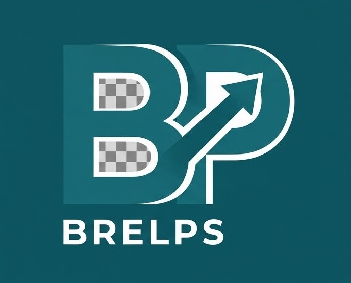

WELCOME TO BRELPS
Buimo Road Early Learning Phonics School provides exceptional Early Childhood and Primary Education across Play School, Pre-School, Grade 1 and Grade 2 levels. We focus on literacy, phonics and foundational skills.
Our Education Levels
-
Play School & Pre-School:
Early Phonics, Social Skills and Creative Play. -
Grade1 & Grade 2:
Core Primary foundation curriculum in Mathematics, Literacy and General Studies.